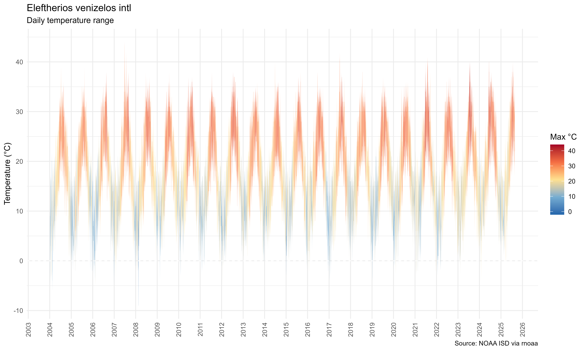
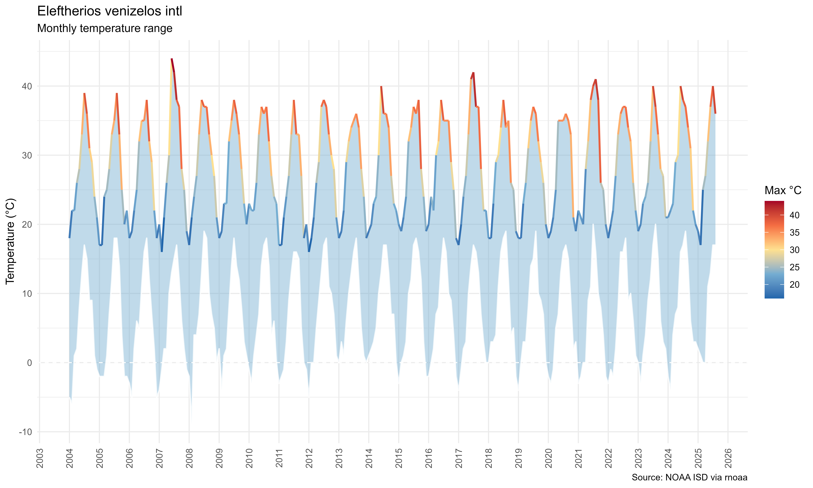
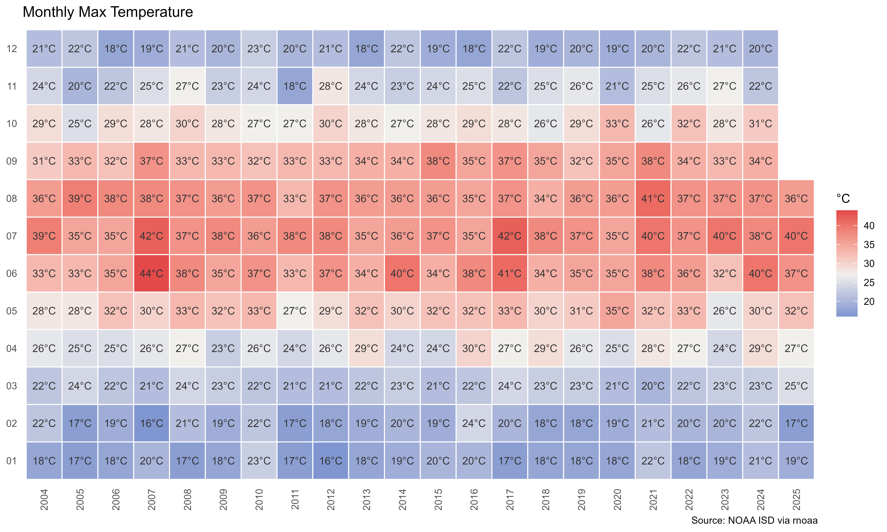
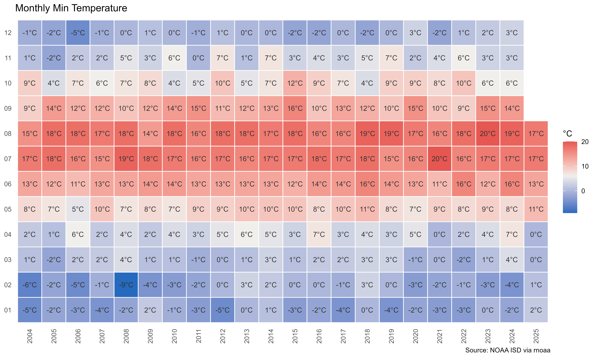
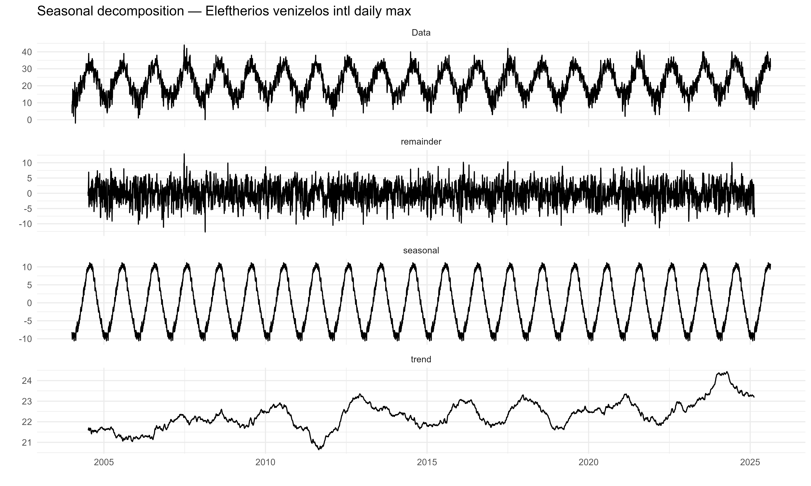

Code
library(rnoaa)
library(dplyr)
library(lubridate)
library(ggplot2)
library(ggfortify) # autoplot() for decomposed time seriesThis tutorial shows how to download, clean, and visualise long-term weather data for any airport in the world using the NOAA Integrated Surface Database (ISD) — no FTP, no API key, no paid data.
The example uses Athens Eleftherios Venizelos (LGAV), but every step works for any ICAO station code.
Outputs:
| Plot | What it shows |
|---|---|
| Daily ribbon | Temperature range (min–max) for every day |
| Monthly ribbon | Smoothed monthly range with gradient line |
| Heatmap max | Monthly max temperature by year |
| Heatmap min | Monthly min temperature by year |
| Decomposition | Trend + seasonal + residual components |
library(rnoaa)
library(dplyr)
library(lubridate)
library(ggplot2)
library(ggfortify) # autoplot() for decomposed time series# remotes::install_github("ropensci/rnoaa") # use the GitHub version
# install.packages(c("dplyr", "lubridate", "ggplot2", "ggfortify"))NOAA ISD identifies stations by USAF and WBAN codes. The easiest way to find them is by ICAO airport code.
stations <- isd_stations(refresh = FALSE)
# explore Greek stations
stations[stations$ctry %in% "GR", c("station_name","icao","usaf","wban","lat","lon")]# A tibble: 92 × 6
station_name icao usaf wban lat lon
<chr> <chr> <chr> <chr> <dbl> <dbl>
1 ORESTIAS "" 166000 99999 41.8 26.5
2 SERRAI "" 166060 99999 41.1 23.6
3 KOMOTINI "" 166100 99999 41.1 25.4
4 FLORINA "" 166130 99999 40.8 21.4
5 ARISTOTELIS "LGKA" 166140 99999 40.4 21.3
6 EDESSA "" 166181 99999 40.8 22.0
7 SEDES(GAFB) "" 166200 99999 40.6 23.0
8 MAKEDONIA "LGTS" 166220 99999 40.5 23.0
9 MEGAS ALEXANDROS INTL "LGKV" 166240 99999 40.9 24.6
10 KAVALA/AMIGDHALEON "" 166250 99999 40.9 24.4
# ℹ 82 more rowslgav <- stations[stations$icao %in% "LGAV", ]
station <- lgav$station_name
usaf <- lgav$usaf[1]
wban <- lgav$wban[1]
message("Station : ", station)
message("USAF : ", usaf, " WBAN: ", wban)
message("Location: ", round(lgav$lat[1], 3), "°N ", round(lgav$lon[1], 3), "°E")Change
"LGAV"to any ICAO code —"EGLL"for Heathrow,"KJFK"for New York, etc.
rnoaa::isd() replaces the old wget + FTP workflow. It downloads, decompresses, and parses the ISD binary format automatically. Each call fetches one year; a loop collects all years into a list.
years <- 2001:2026
data_list <- list()
for (yr in years) {
tryCatch({
d <- rnoaa::isd(usaf = usaf, wban = wban, year = yr, progress = FALSE)
data_list[[as.character(yr)]] <- d
message(" downloaded ", yr, " (", nrow(d), " rows)")
}, error = function(e) message(" skip ", yr, ": ", conditionMessage(e)))
}
df_raw <- bind_rows(data_list)
message("Total rows: ", nrow(df_raw))Years where data are unavailable are silently skipped by
tryCatch. 2026 data may be partial depending on when you run this.
NOAA ISD encodes missing measurements as 9999 in the raw file. After dividing by 10 (ISD stores all values as tenths of the unit), missing temperature becomes 999.9°C — a physically impossible value that will corrupt any aggregate (mean, max, min) if not removed.
df_data <- df_raw |>
mutate(
date = as.Date(date, format = "%Y%m%d"), # isd() returns "YYYYMMDD" strings
temp = as.numeric(temperature) / 10,
dew = as.numeric(temperature_dewpoint) / 10,
wind_spd = as.numeric(wind_speed) / 10,
slp = as.numeric(air_pressure) / 10
) |>
mutate(across(c(temp, dew, wind_spd, slp),
~ ifelse(. > 900 | . < -200, NA, .))) |>
filter(!is.na(date))
df_data[df_data == 999.9] <- NA # catch any remaining sentinels
df_data$month <- sub("-\\d{2}$", "", df_data$date) # "YYYY-MM" columnTwo-pass sentinel removal:
ifelse(. > 900 | . < -200, NA, .) — catches the scaled sentinels immediately after divisiondf_data[df_data == 999.9] <- NA — safety net for any that slipped throughplyr::ddply with numcolwise applies a function (here max or min) to every numeric column, grouped by date or month. Columns are then renamed with _max / _min suffixes before merging.
daily_max <- plyr::ddply(df_data, "date", plyr::numcolwise(max, na.rm = TRUE))
daily_min <- plyr::ddply(df_data, "date", plyr::numcolwise(min, na.rm = TRUE))
month_max <- plyr::ddply(df_data, "month", plyr::numcolwise(max, na.rm = TRUE))
month_min <- plyr::ddply(df_data, "month", plyr::numcolwise(min, na.rm = TRUE))
names(daily_max)[2:length(daily_max)] <- paste0(names(daily_max)[2:length(daily_max)], "_max")
names(daily_min)[2:length(daily_min)] <- paste0(names(daily_min)[2:length(daily_min)], "_min")
names(month_max)[2:length(month_max)] <- paste0(names(month_max)[2:length(month_max)], "_max")
names(month_min)[2:length(month_min)] <- paste0(names(month_min)[2:length(month_min)], "_min")
daily <- merge(daily_max, daily_min)
month <- merge(month_max, month_min)
daily$date <- as.Date(daily$date)
month$month_date <- as.Date(paste0(month$month, "-01"))
month <- month[order(month$month_date), ]head(daily[, c("date","temp_max","temp_min","wind_spd_max")], 6) date temp_max temp_min wind_spd_max
1 2004-01-05 9 7 6.2
2 2004-01-06 9 2 8.7
3 2004-01-07 4 -3 8.2
4 2004-01-08 9 -5 4.6
5 2004-01-09 9 -1 3.1
6 2004-01-10 11 4 9.3geom_ribbon fills the area between the daily min and max. The fill colour is mapped to temp_max through a diverging gradient — cold days are blue, hot days are red.
plot_daily <- ggplot(daily, aes(x = date)) +
geom_ribbon(aes(ymin = temp_min, ymax = temp_max, fill = temp_max), alpha = 0.7) +
scale_fill_gradientn(
colours = c("#2166ac","#74add1","#fee090","#f46d43","#a50026"),
name = "Max °C"
) +
scale_x_date(date_breaks = "1 year", date_labels = "%Y") +
geom_hline(yintercept = 0, color = "white", linewidth = 0.4, linetype = "dashed") +
labs(
title = str_aes(station),
subtitle = "Daily temperature range",
x = NULL, y = "Temperature (°C)",
caption = "Source: NOAA ISD via rnoaa"
) +
theme_minimal(base_size = 10) +
theme(
plot.background = element_rect(fill = "white", color = NA),
axis.text.x = element_text(angle = 90, vjust = 0.5, hjust = 1),
panel.grid.minor.x = element_blank()
)
plot_daily
Aggregating to monthly level removes the noise and makes the seasonal pattern clearer. The max temperature gets a coloured gradient line; the min stays white.
plot_monthly <- ggplot(month, aes(x = month_date)) +
geom_ribbon(aes(ymin = temp_min, ymax = temp_max), fill = "#74add1", alpha = 0.45) +
geom_line(aes(y = temp_max, color = temp_max), linewidth = 0.8) +
geom_line(aes(y = temp_min), color = "white", linewidth = 0.6, alpha = 0.8) +
scale_color_gradientn(
colours = c("#2166ac","#74add1","#fee090","#f46d43","#a50026"),
name = "Max °C"
) +
scale_x_date(date_breaks = "1 year", date_labels = "%Y") +
geom_hline(yintercept = 0, color = "white", linewidth = 0.4, linetype = "dashed") +
labs(
title = str_aes(station),
subtitle = "Monthly temperature range",
x = NULL, y = "Temperature (°C)",
caption = "Source: NOAA ISD via rnoaa"
) +
theme_minimal(base_size = 10) +
theme(
plot.background = element_rect(fill = "white", color = NA),
axis.text.x = element_text(angle = 90, vjust = 0.5, hjust = 1),
panel.grid.minor.x = element_blank()
)
plot_monthly
A calendar heatmap puts year on the x-axis and month on the y-axis, with temperature encoded as fill colour. This format is ideal for spotting anomalies — an unusually hot August or a cold February stands out immediately.
month$year <- substr(month$month, 1, 4)
month$mon <- substr(month$month, 6, 7)
plot_heat_max <- ggplot(month, aes(x = year, y = mon, fill = temp_max)) +
geom_tile(color = "white", linewidth = 0.4) +
geom_text(aes(label = paste0(round(temp_max, 1), "°C")),
color = "grey20", size = 3) +
scale_fill_gradient2(
low = "#256abf", mid = "#f0efec", high = "#e34948",
midpoint = median(month$temp_max, na.rm = TRUE),
name = "°C"
) +
labs(title = "Monthly Max Temperature", x = NULL, y = NULL,
caption = "Source: NOAA ISD via rnoaa") +
theme_minimal(base_size = 10) +
theme(panel.grid = element_blank(),
axis.text.x = element_text(angle = 90, vjust = 0.5, hjust = 1))
plot_heat_min <- ggplot(month, aes(x = year, y = mon, fill = temp_min)) +
geom_tile(color = "white", linewidth = 0.4) +
geom_text(aes(label = paste0(round(temp_min, 1), "°C")),
color = "grey20", size = 3) +
scale_fill_gradient2(
low = "#256abf", mid = "#f0efec", high = "#e34948",
midpoint = median(month$temp_min, na.rm = TRUE),
name = "°C"
) +
labs(title = "Monthly Min Temperature", x = NULL, y = NULL,
caption = "Source: NOAA ISD via rnoaa") +
theme_minimal(base_size = 10) +
theme(panel.grid = element_blank(),
axis.text.x = element_text(angle = 90, vjust = 0.5, hjust = 1))
plot_heat_max
plot_heat_min
plot_multiplot(
plotlist = list(plot_daily, plot_monthly, plot_heat_max, plot_heat_min),
cols = 1
)
[[1]]decompose() splits a time series into three additive components:
The frequency = 365 tells R the series repeats annually. yday() sets the correct starting position within the first year.
ts_temp <- ts(
daily$temp_max,
frequency = 365,
start = c(year(min(daily$date)), yday(min(daily$date)))
)
fit <- decompose(ts_temp)
autoplot(fit) +
labs(title = paste("Seasonal decomposition —", str_aes(station), "daily max")) +
theme_minimal(base_size = 10)
Reading the decomposition: If the trend panel slopes upward over 20+ years, that is a local warming signal. The random panel should look like white noise — large spikes indicate extreme weather events.
Change only these two lines and re-run everything:
lgav <- stations[stations$icao %in% "EGLL", ] # London Heathrow
years <- 2000:2026Any ICAO code in the ISD station list will work. To search by country:
stations[stations$ctry %in% "UK", c("station_name","icao","usaf","wban")]| Resource | URL |
|---|---|
| NOAA ISD | https://www.ncei.noaa.gov/products/land-based-station/integrated-surface-database |
| rnoaa package | https://github.com/ropensci/rnoaa |
| Station list | isd_stations() — cached locally after first call |
Rendered with R 4.6.1 · rnoaa · ggplot2 · plyr · lubridate